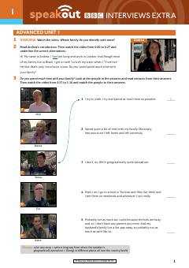

SASpeakout Advanced darsligi uchun BBC intervyulari asosidagi amaliy ish varoqlari va mashqlar.
Ushbu qo'llanma Speakout Advanced darajasidagi talabalar uchun mo'ljallangan bo'lib, BBC intervyulariga asoslangan video materiallar va amaliy ish varaqlarini o'z ichiga oladi. U tinglab tushunish, so'z boyligini oshirish va og'zaki muloqot ko'nikmalarini rivojlantirishga yordam beradi. Materiallar turli hayotiy mavzular bo'yicha real suhbatlarni tahlil qilish uchun qulay topshiriqlarni taqdim etadi.